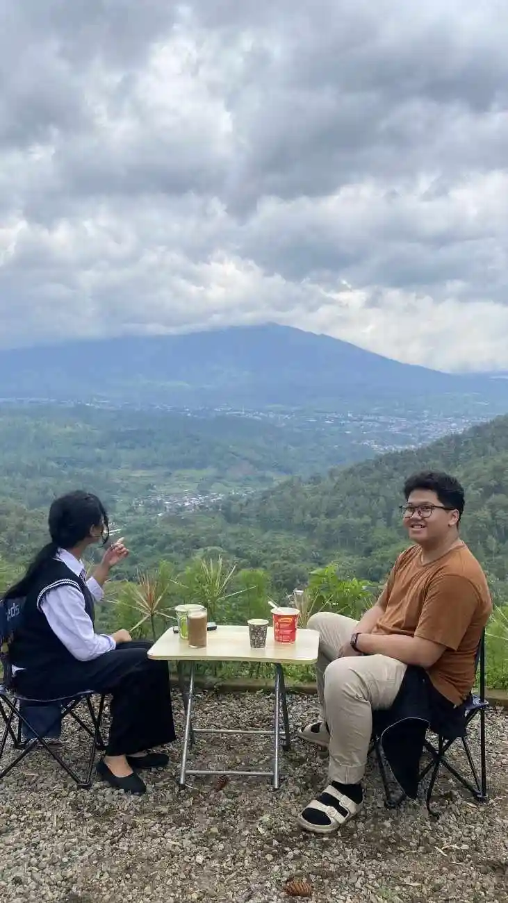

Sering merasa aneh? Anda mendaki perbukitan Batu Malang dengan persentase HP 100%, namun sore harinya sewaktu ingin mendokumentasikan sunset, ponsel tiba-tiba berkedip mati atau drop hingga 5% secara misterius? Itulah sihir 'Lithium-Ion' yang membeku di udara tipis.
Kombinasi antara pencarian sinyal ekstrem (_Network Searching_) oleh antena HP Anda yang ditambah paparan cuaca dingin menukik, menjadikan molekul elektrolit di dalam sel daya melambat akut. Jangan biarkan kamera *mirrorless* dan HP Anda lumpuh ketika panorama sedang membakar alam terbuka.
"Membawa bongkahan Powerbank berat tiada berguna pabila Anda membiarkan perangkat telanjang terpapar sergapan embun dingin tengah malam." - Adiel Ebert
1. Hangatkan Secara Biologis Melalui Suhu Tubuh
Ini adalah rahasia para pendaki _Himalaya_, namun sepenuhnya bisa diaplikasikan di pegunungan Batu. Mesin pengisi daya terhangat sebetulnya adalah denyut nadi Anda sendiri.
1.1 Simpan di Saku Jaket Dalam (Inner Pocket)
Jangan pernah menaruh *smartphone*, baterai cadangan kamera, apalagi perangkat *headlamp*, tertinggal begitu saja di lantai tenda atau ransel liar luar selama malam hari. Masukkan seluruh perangkat bertenaga _Lithium_ ke dalam saku kemeja bagian dalam (mendekati dada), persis di bawah lipatan jaket _Polar_ atau _Waterproof_ tebal Anda.


2. Operasikan Mode Penerbangan Sepanjang Hari
Penyedot energi utama sebuah HP saat memasuki hutan lebat atau perbukitan kapur kota Batu bukan layarnya, melainkan pemancar sinyal (Antena Modem LTE). Saat indikator sinyal menunjukkan 'No Service' atau '1 bar', HP akan membakar daya dua kali lipat lebih buas mencari menara pancar yang tak kasatmata.

2.1 Bawa Pemanas Tangan (_Hand Warmer_) Cadangan
Jika Anda memakai _Powerbank_, bebatlah Powerbank beserta perangkat yang sedang di-

3. Jangan Memaksa Menyalakan Secara Prematur
Saat Anda bangun kedinginan pukul 04:00 subuh untuk membidik matahari terbit, dan layar kamera Anda menyala lima detik kemudian langsung padam total, JANGAN menekan terus-terusan pelatuk *_Power On_*!
Baterainya tidak sepenuhnya habis (kosong), melainkan "membeku palsu". Lepas segera *Cartridge Battery* tersebut, asupkan dan gosok cepat menggunakan bantalan telapak tangan di saku celana ketiak selama sekitar 15 menit, hingga temperatur karet baterai menghangat suam kuku, barulah masukan kembali ke kompartemen.

4. FAQ Seputar Isolasi Aki Elektronik Kemping
5. Kesimpulan
Merawat umur asupan peranti elektronik Anda adalah sebuah rutinitas preventif, seolah Anda tengah merawat seorang bayi prematur. Jauhkan alat penyedot instan tersebut dari terpaan badai beku, pakailah kaus kaki cadangan tebal sebagai sarung, dan maksimalkan perpindahan napas suhu dada Anda sebagai tungku pemanas gratis.
Sekarang, berbekal pengetahuan ini, Anda dapat fokus sepenuhnya memotret pendar jingga pagi di puncak lembah Batu, menelepon sanak keluarga dengan lantang, tanpa diganggu kutukan "*Battery Low*" yang merusak keseruan liburan kemping premium Anda.
Adiel Ebert Nakula Shandy
Fotografer penikmat _landscape_ dan _reviewer_ piranti _survival_ elektronika tangguh tanggap bencana alam. Mengagumi sirkuit tahan guncangan dan efisiensi tenaga darurat bukit kapur.